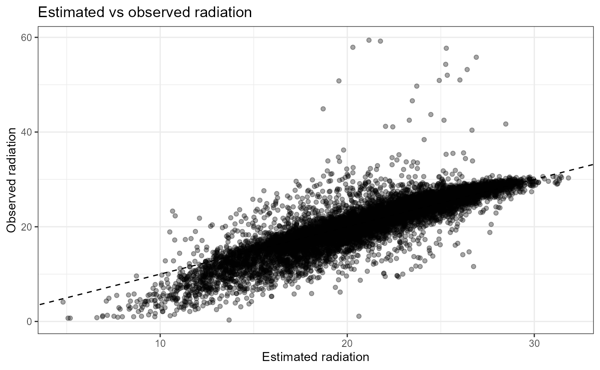
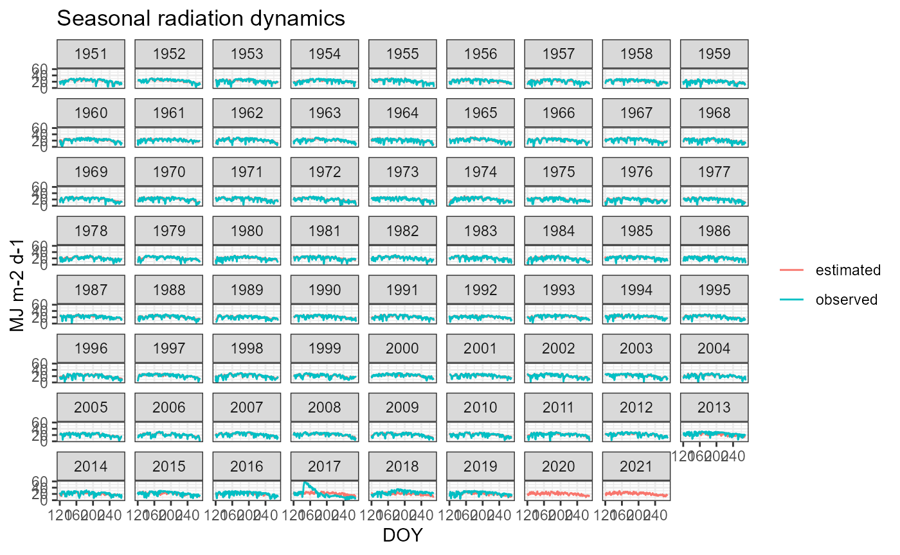
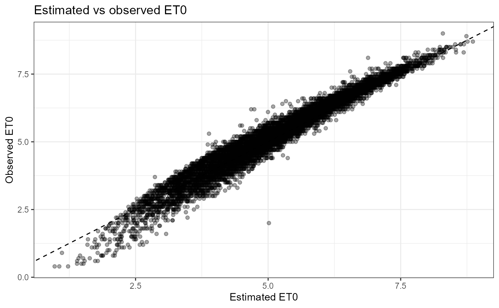
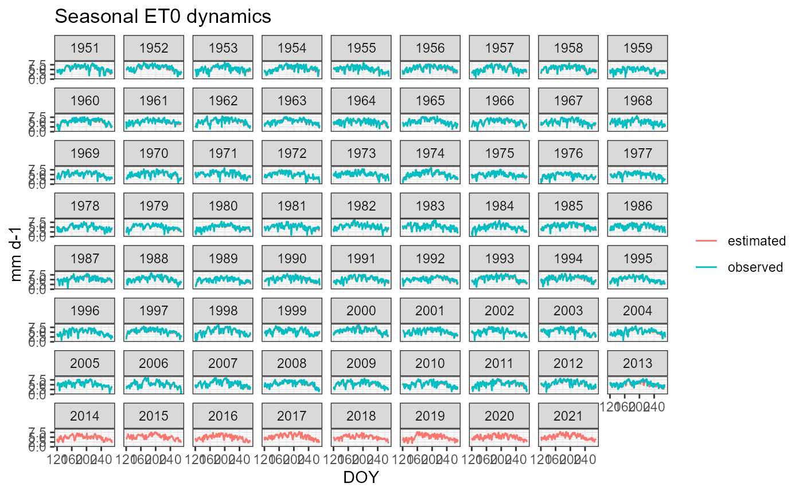

Calibration of ET0 and Radiation for Tomato Irrigation with cumba
Source:vignettes/estimate_et0_rad.Rmd
estimate_et0_rad.RmdRead observed weather data
Use the shipped CSV containing observed radiation (Rg) and ET0.
csv_file <- system.file(
"testFiles",
"weather_foggia.csv",
package = "cumba"
)
weather <- read_csv("..//testFiles/weather_foggia.csv") |>
mutate(MDATE = as.Date(MDATE,format = '%m/%d/%Y')) |>
rename(P = RAIN, Tx = TMAX, Tn = TMIN,DATE = MDATE) |>
mutate(Lat=41,Site = 'Foggia',
Rg = as.numeric(Rg),ET0=as.numeric(ET0))## Rows: 25933 Columns: 7
## ── Column specification ────────────────────────────────────────────────────────
## Delimiter: ","
## chr (3): MDATE, Rg, ET0
## dbl (4): TMAX, TMIN, RH, RAIN
##
## ℹ Use `spec()` to retrieve the full column specification for this data.
## ℹ Specify the column types or set `show_col_types = FALSE` to quiet this message.## Warning: There were 2 warnings in `mutate()`.
## The first warning was:
## ℹ In argument: `Rg = as.numeric(Rg)`.
## Caused by warning:
## ! NAs introduced by coercion
## ℹ Run `dplyr::last_dplyr_warnings()` to see the 1 remaining warning.
glimpse(weather)## Rows: 25,933
## Columns: 9
## $ DATE <date> 1951-01-01, 1951-01-02, 1951-01-03, 1951-01-04, 1951-01-05, 1951…
## $ Tx <dbl> 10.0, 14.8, 10.2, 9.1, 12.0, 11.0, 9.0, 12.2, 11.2, 12.5, 13.1, 1…
## $ Tn <dbl> 3.0, 4.0, 6.4, 6.4, 4.3, 6.1, 3.2, 3.0, 4.0, 3.1, 1.0, 5.1, 5.5, …
## $ RH <dbl> 61.7, 48.3, 77.2, 83.2, 59.2, 71.7, 66.9, 53.3, 61.1, 52.7, 43.6,…
## $ P <dbl> 0.3, 0.0, 42.0, 0.0, 0.0, 13.2, 1.0, 0.0, 5.6, 1.2, 0.0, 0.5, 0.0…
## $ Rg <dbl> 3.0, 5.1, 1.2, 1.2, 3.2, 2.9, 2.7, 4.7, 4.0, 6.1, 5.8, 5.0, 6.6, …
## $ ET0 <dbl> 1.2, 1.7, 0.7, 0.6, 1.4, 1.1, 1.1, 1.5, 1.3, 1.5, 1.7, 1.6, 1.8, …
## $ Lat <dbl> 41, 41, 41, 41, 41, 41, 41, 41, 41, 41, 41, 41, 41, 41, 41, 41, 4…
## $ Site <chr> "Foggia", "Foggia", "Foggia", "Foggia", "Foggia", "Foggia", "Fogg…Expected columns:
- DATE
- Tx
- Tn
- P
- Rg
- ET0
- Site
- Lat
Run CUMBA with internal estimators
weather_pkg <-
out <- cumba_scenario(
weather = weather |> select(-c(Rg,ET0)),
param = cumbaParameters,
estimateRad = TRUE,
estimateET0 = TRUE,
fullOut = TRUE
)## CUMBA running in deficit irrigation mode
## 🍅 running experiment 1 in site Foggia and year 1951
## 🍅 running experiment 2 in site Foggia and year 1952
## 🍅 running experiment 3 in site Foggia and year 1953
## 🍅 running experiment 4 in site Foggia and year 1954
## 🍅 running experiment 5 in site Foggia and year 1955
## 🍅 running experiment 6 in site Foggia and year 1956
## 🍅 running experiment 7 in site Foggia and year 1957
## 🍅 running experiment 8 in site Foggia and year 1958
## 🍅 running experiment 9 in site Foggia and year 1959
## 🍅 running experiment 10 in site Foggia and year 1960
## 🍅 running experiment 11 in site Foggia and year 1961
## 🍅 running experiment 12 in site Foggia and year 1962
## 🍅 running experiment 13 in site Foggia and year 1963
## 🍅 running experiment 14 in site Foggia and year 1964
## 🍅 running experiment 15 in site Foggia and year 1965
## 🍅 running experiment 16 in site Foggia and year 1966
## 🍅 running experiment 17 in site Foggia and year 1967
## 🍅 running experiment 18 in site Foggia and year 1968
## 🍅 running experiment 19 in site Foggia and year 1969
## 🍅 running experiment 20 in site Foggia and year 1970
## 🍅 running experiment 21 in site Foggia and year 1971
## 🍅 running experiment 22 in site Foggia and year 1972
## 🍅 running experiment 23 in site Foggia and year 1973
## 🍅 running experiment 24 in site Foggia and year 1974
## 🍅 running experiment 25 in site Foggia and year 1975
## 🍅 running experiment 26 in site Foggia and year 1976
## 🍅 running experiment 27 in site Foggia and year 1977
## 🍅 running experiment 28 in site Foggia and year 1978
## 🍅 running experiment 29 in site Foggia and year 1979
## 🍅 running experiment 30 in site Foggia and year 1980
## 🍅 running experiment 31 in site Foggia and year 1981
## 🍅 running experiment 32 in site Foggia and year 1982
## 🍅 running experiment 33 in site Foggia and year 1983
## 🍅 running experiment 34 in site Foggia and year 1984
## 🍅 running experiment 35 in site Foggia and year 1985
## 🍅 running experiment 36 in site Foggia and year 1986
## 🍅 running experiment 37 in site Foggia and year 1987
## 🍅 running experiment 38 in site Foggia and year 1988
## 🍅 running experiment 39 in site Foggia and year 1989
## 🍅 running experiment 40 in site Foggia and year 1990
## 🍅 running experiment 41 in site Foggia and year 1991
## 🍅 running experiment 42 in site Foggia and year 1992
## 🍅 running experiment 43 in site Foggia and year 1993
## 🍅 running experiment 44 in site Foggia and year 1994
## 🍅 running experiment 45 in site Foggia and year 1995
## 🍅 running experiment 46 in site Foggia and year 1996
## 🍅 running experiment 47 in site Foggia and year 1997
## 🍅 running experiment 48 in site Foggia and year 1998
## 🍅 running experiment 49 in site Foggia and year 1999
## 🍅 running experiment 50 in site Foggia and year 2000
## 🍅 running experiment 51 in site Foggia and year 2001
## 🍅 running experiment 52 in site Foggia and year 2002
## 🍅 running experiment 53 in site Foggia and year 2003
## 🍅 running experiment 54 in site Foggia and year 2004
## 🍅 running experiment 55 in site Foggia and year 2005
## 🍅 running experiment 56 in site Foggia and year 2006
## 🍅 running experiment 57 in site Foggia and year 2007
## 🍅 running experiment 58 in site Foggia and year 2008
## 🍅 running experiment 59 in site Foggia and year 2009
## 🍅 running experiment 60 in site Foggia and year 2010
## 🍅 running experiment 61 in site Foggia and year 2011
## 🍅 running experiment 62 in site Foggia and year 2012
## 🍅 running experiment 63 in site Foggia and year 2013
## 🍅 running experiment 64 in site Foggia and year 2014
## 🍅 running experiment 65 in site Foggia and year 2015
## 🍅 running experiment 66 in site Foggia and year 2016
## 🍅 running experiment 67 in site Foggia and year 2017
## 🍅 running experiment 68 in site Foggia and year 2018
## 🍅 running experiment 69 in site Foggia and year 2019
## 🍅 running experiment 70 in site Foggia and year 2020
## 🍅 running experiment 71 in site Foggia and year 2021
##
sim <- out |>
select(year, doy, radiation, et0)Radiation
ggplot(cmp, aes(radiation, Rg)) +
geom_point(alpha=.35) +
geom_abline(slope=1, intercept=0, linetype=2) +
labs(
x = "Estimated radiation",
y = "Observed radiation",
title = "Estimated vs observed radiation"
) +
theme_bw()## Warning: Removed 302 rows containing missing values or values outside the scale range
## (`geom_point()`).
ggplot(cmp, aes(doy)) +
geom_line(aes(y = radiation, colour = "estimated")) +
geom_line(aes(y = Rg, colour = "observed")) +
facet_wrap(~year) +
labs(
x = "DOY",
y = "MJ m-2 d-1",
colour = NULL,
title = "Seasonal radiation dynamics"
) +
theme_bw()## Warning: Removed 302 rows containing missing values or values outside the scale range
## (`geom_line()`).
ET0
ggplot(cmp, aes(et0, ET0)) +
geom_point(alpha=.35) +
geom_abline(slope=1, intercept=0, linetype=2) +
labs(
x = "Estimated ET0",
y = "Observed ET0",
title = "Estimated vs observed ET0"
) +
theme_bw()## Warning: Removed 1208 rows containing missing values or values outside the scale range
## (`geom_point()`).
ggplot(cmp, aes(doy)) +
geom_line(aes(y = et0, colour = "estimated")) +
geom_line(aes(y = ET0, colour = "observed")) +
facet_wrap(~year) +
labs(
x = "DOY",
y = "mm d-1",
colour = NULL,
title = "Seasonal ET0 dynamics"
) +
theme_bw()## Warning: Removed 1208 rows containing missing values or values outside the scale range
## (`geom_line()`).
Performance metrics
cmp |>
summarise(
RMSE_rad = sqrt(mean((radiation - Rg)^2, na.rm = TRUE)),
Bias_rad = mean(radiation - Rg, na.rm = TRUE),
R2_rad = cor(radiation, Rg, use = "complete.obs")^2,
RMSE_et0 = sqrt(mean((et0 - ET0)^2, na.rm = TRUE)),
Bias_et0 = mean(et0 - ET0, na.rm = TRUE),
R2_et0 = cor(et0, ET0, use = "complete.obs")^2
)## RMSE_rad Bias_rad R2_rad RMSE_et0 Bias_et0 R2_et0
## 1 2.999591 0.1901638 0.7574204 0.3168735 -0.1020532 0.9566861